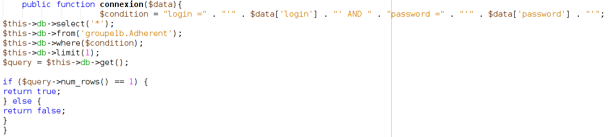

Le CVVEN (Comité pour les Villages de Vacances de l'Education Nationale) est une association
(fictive) régie par la loi de 1901, et qui joue le rôle de comité d'entreprise auprès de tous les agents
de l'Education Nationale.
Le CVVEN dispose de 4 villages de vacances répartis dans toute la France : Les Rousses (Jura), La
Rochelle (Charente-Maritime), Saint-Anthème (Puy-de-Dôme), et Villefort (Lozère).
Le but est de développer une application de réservation des séjours de vacances en PHP en utilisant le
framework CodeIgniter.
Hébergement et restauration :
Le ménage des appartements est à la charge des occupants. Il est possible de prendre à l'arrivée un forfait "ménage fin de séjour". Le restaurant accueille les vacanciers en pension complète ou demi-pension toute l'année. Possibilité de pique-nique. Repas adaptés pour les bébés.
Les salles de colloques :
Animations :
En toute saison, le centre dispose : d'une bibliothèque adultes et enfants, de télévisions, d'un piano,
d'une table de ping-pong, et d'une salle de fitness.
Selon les semaines, peuvent être organisés, des soirées dansantes, des spectacles assurés par des
intervenants extérieurs (chansons, danses folkloriques, théâtre, magie, cirque, diaporama,
expositions), du cinéma, des concerts
Pendant les vacances scolaires, des activités manuelles (arts plastiques...) ou des ateliers (danses,
musique, remise en forme, théâtre...) sont organisés.
En été, le centre dispose d'un terrain de sport (basket ball, volley, handball...) et d'un parc de VTT
que peuvent louer les participants.
En hiver, location de matériel (ski, raquette, chaussures de randonnée) avec un partenaire.
Pour les participants aux colloques, le centre peut proposer des randonnées encadrées par des
professionnels.
Pour réaliser ce projet, nous avons été répartie en groupe de 3-4 personnes. Puis dans ce groupe, nous nous sommes divisés en groupe de 2 pour réaliser des tâches différentes et donc avancer plus rapidement sur le travail demandé.
Mais avant de se répartir en demi-groupes, nous nous sommes concerté afin de concevoir la base de données lié au projet
Mon groupe (composé d'Aymeric et de moi même) avait pour but de créer les fonctionnalités suivante :
Quant à l'autre groupe (composé de Kelig et Dawan), il avait pour but de créer les fonctionnalités suivante :
Formulaire de création de compte utilisateur :
On a créer un nouveau controller destiné aux réservations des chambres et inscription des utilisateurs.
Pour le formulaire de création de compte des utilisateurs,
nous avons crée une fonction intitulée "inscription_submitted()" dans ce controller qui contient la création du formulaire de réservation (nom, prénom, adresse, code postal, mail, téléphone, login et password).
Ensuite, on appelle la fonction "form_insert()" contenu dans le modèle "Inscription" en faisant passer le tableau contenant le formulaire d'inscription.
Cette fonction a pour rôle d'envoyer dans la base de donnée les informations saisie grâce au formulaire.
Authentification des utilisateurs enregistrés dans la base de données :
On a créer un nouveau controller destiné à la connexion des utilisateurs.
Ensuite, nous avons crée une fonction intitulée "connexion_user()" qui contient le code permettant de se connecter avec un compte crée grâce à l'étape au dessus.
On initialise tout d'abord un formulaire afin que l'utilisateur puisse rentrer son login et son mot de passe.
On va ensuite envoyé ses informations à la fonction qui se nomme "connexion()" contenue dans le modèle "Connexion_model"(voir image ci-dessous).

Une fois que l'on a récupéré les informations lié aux données saisie par l'utilisateur, on créer une nouvelle session avec la méthode "set_userdata()".
Puis on charge dans une nouvelle vue les informations liés à l'utilisateur.
Bouton de déconnexion :
Dans le même controller que pour la connexion, nous avons créer une nouvelle fonction qui a pour but de déconnecter l'utilisateur lorsqu'il appuie sur le bouton "Deconnexion"
Pour déconnecter l'utilisateur, on détruit la session existante avec la méthode "unset_userdata()" et on renvoie l'utilisateur sur la page de connexion.
Navigation fluide entre les différentes pages de l’application :
On a crée dans nos vues différents menu afin de naviguer entre les vues.
Par exemple, lorsque l'on se connecte, l'utilisateur peut soit accéder au formulaire de réservation, soit se déconnecter.